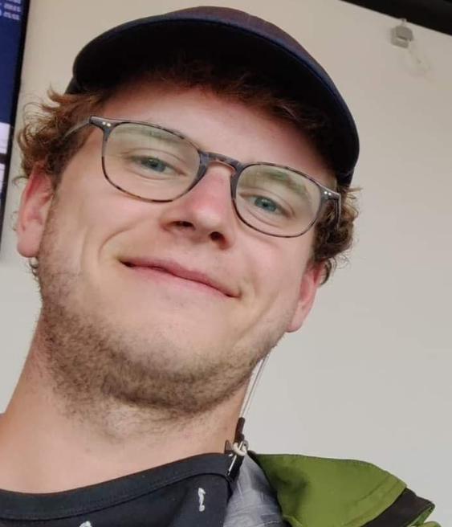

Our staff are happy to help you plan your ultimate dream trip.
Each member of our team, also called the Travel Gradjes, has specialised knowledge in organising and guiding trips. We therefore ensure that the right Travel Gradje assists you in every moment of your adventure.
Get inspired by our travel experts and enjoy a carefree holiday. We take care of the arrangements so that all you have to do is enjoy!
Travel Gradjes
We automatically match the right Travel Gradje to each element within your trip planning. Do you have a specific question? Then you can always contact us yourself.
Eeuw Grieck
Founder and proud CEO of Gradje Travel Agency. He is always looking for enthusiastic travel fans to join his team. Feel free to let us know via our contact page if you would like to join our team!
Travel Gradje specialisations
Management of trip organtistaion
Marketing and finance
Website maintenance
Sailing competences
Competent Crew
RYA Mile Builder
Cristianocaust survivor: Day Skipper

Wow Meersch
Wow is a proud Travel Gradje who is dedicated to organising sailing trips. He is an adventurous water rat who is not shy about exploring new areas.